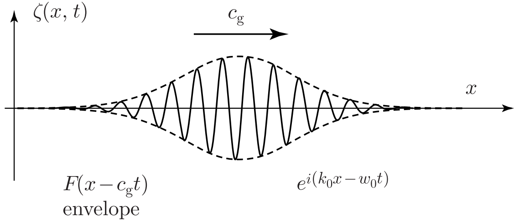

Suppose that we have a linear system of waves characterized by a dispersion relation \(\omega = \omega(k)\)
for the frequency \(\omega\) and wavenumber \(k\), and that there is a traveling wave solution of the form
\[
\zeta(x, t) = A e^{i(kx - \omega t)}
\]
In view of the assumed linearity of the wave system, a general solution is represented in the form of the following integral (a Fourier representation):
\[
\zeta(x, t) = \int_{-\infty}^{\infty} A(k) e^{i(kx - \omega t)} \, dk
\]
Consider a wavemaker which oscillates at a single frequency \(\omega_0\).
Its amplitude first increased from zero to a maximum and then returned to zero again,
slowly with a time scale much larger than the oscillation period \(2\pi / \omega_0\).
By this wave excitation, it is found that most of the wave energy is concentrated on a narrow band of
wavenumbers around \(k_0\). Hence, the dispersion relation is approximated by the following linear relation:
\[
\omega(k) = \omega_0 + c_g (k - k_0), \quad \omega_0 = \omega(k_0), \quad c_g = d\omega/dk
\]
(The amplitude \(A(k)\) is regarded as zero for such \(k\)-values in which the above linear relation loses its validity.)
(1) Show that the resulting wave would be given by the following form of a wave packet, with \(\xi = x - c_g t\):
\[
\zeta(x, t) = F(\xi) e^{i(k_0 x - \omega_0 t)}
\]
In addition, write down the Fourier representation of the amplitude function \(F(\xi)\).
The function \(F(\xi)\) is an envelope moving with the group velocity \(c_g\) and enclosing carrier waves \(e^{i(k_0 x - \omega_0 t)}\) within it
(2) When the Fourier amplitude is given by \(A(k) = A_0 \exp[-a(k - k_0)^2]\), which is a Gaussian function centered around \(k_0\), derive an explicit expression for the wave packet.
